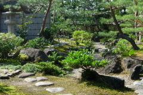

そばまつりで、風月庵の釜揚げそば
2009/11/01
今日は雨は降るし風もあり、寒かったです。
こんな悪い天気には、そばまつり会場の伝承館には絶対行けないと思って、出雲市駅の会場に行ったんですが、それでも少し寒かったです。
今年は初めて地元の蕎麦屋さんの蕎麦を食べたんですが、それだったら日をあらためて普通にチケット持ってお店に行けば良かったって思いました。
島根県出雲市
2009/11/01
今日は雨は降るし風もあり、寒かったです。
こんな悪い天気には、そばまつり会場の伝承館には絶対行けないと思って、出雲市駅の会場に行ったんですが、それでも少し寒かったです。
今年は初めて地元の蕎麦屋さんの蕎麦を食べたんですが、それだったら日をあらためて普通にチケット持ってお店に行けば良かったって思いました。
2008/11/2
今回のそばまつりは、いつもやっている出雲文化伝承館の会場とJR出雲市駅アトネスいずも縁引寄会場の2ヶ所でやっていました。
伝承館は混むし、今日はそんなに天気よくないし、前も行ったので、今回は出雲市駅の会場に行きました。
こっちはこっちでイベントとかやっててそこそこにぎわってました。
隠岐そばを初めて食べたんですが、とっても美味しかったです。絶品です。
サバと柚子が入っているんですが、それぞれが蕎麦によく合ってるし、普通の蕎麦と違った新鮮な感じの風味が味わえて良かったです。
隠岐にはなかなか行けないので、次いつ食べれるかわからないですが、何かのイベントで見つけたらまた食べたいです。
2007/10/28
このイベントは人気があって混雑するって話を聞いていたので、10時半位に行ったんですがもう出雲文化伝承館の駐車場はいっぱいでした。10時スタートなので当然ですね。
仕方ないのでシャトルバスが発着する島根ワイナリーに車を止めました。ワイナリーはとても空いてました。
会場には蕎麦屋さん以外にも出店が沢山並んでいてにぎやかでした。特産品や新商品が色々あり見てて面白かったです。
蕎麦ですが、岩手のわんこそばは長い列が出来てましたが、他はそんなに待たなくても食べれました。普通に蕎麦屋さんで注文して食べるよりも早かったかもしれません。
今日は日曜日で天気もとても良かったので、長時間並ぶんだろうなって覚悟してたんですが、空いてて肩すかしな感じでした。
兵庫の出石皿そばを食べたんですが、そばつゆの中に生玉子を入れるんですね。たまごがあるので、つゆとそばがしっかりからんで、美味しかったです。すき焼きっぽい感じがしました。
こんど家でそばを食べることがあったら、またそうやって食べようと思いました。

会場の出雲文化伝承館では、古い屋敷、美術館以外にも立派なお茶室や庭があるんですが、茶室や庭にはほとんど人がいませんでした。 私はのんびり歩けて良かったですけど、ちょっと寂しかったです。いいものがあるのに見てもらえないなんてもったいないですね。